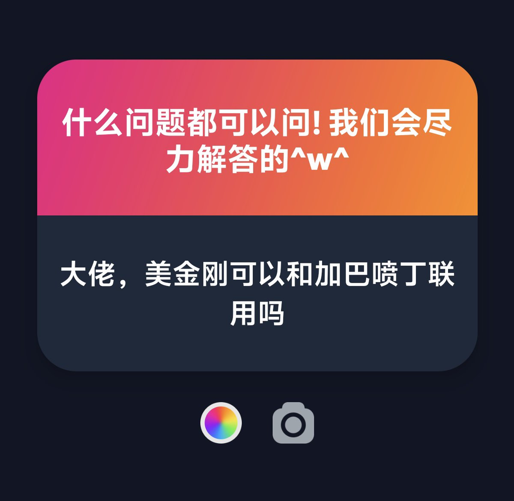

椎名Shiina2.0
@sacred1124
@_Shikieiki 美金刚和加巴喷丁不要高剂量联用 可能诱发谵妄共济失调

Shikieiki Yamaxanadu
@_Shikieiki
p1 普瑞巴林:克利加巴林效力大概是1:4或者1:5这样子?那就是普瑞600mg≈120–150mg克利这样子
p2 加到70-90mg试试?再没有效果的话就不要o美金刚了吧...效果因人而异
p3 可能会吧...我没买过感康不知道具体有多少氯苯那敏
p4 可以desu! https://t.co/bdnTQY8QU0